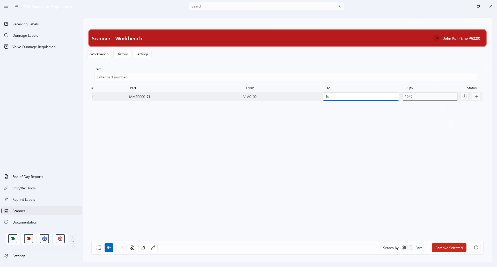

Scanner
A batch transfer tool. Build a short list of location-to-location moves, then let Scanner drive Infor Visual's Inventory Transfers screen and send each line for you.
Overview
Moving material between locations one screen at a time is slow and error-prone. Scanner turns that into a two-part job: compose the whole list up front in a spreadsheet-style grid, then run it while Infor Visual works through the lines.
The list is a session. It is saved to MySQL as you type, so a crash, a restart, or a shift change does not lose the lines that have not been sent yet.

Compose first, send later
Add every line before touching Infor Visual. Validate the list, fix the problems Scanner identifies, then send.
Resumable sessions
Lines are persisted individually with their own status, so a partially sent list can be picked up again without re-entering anything.
What Scanner Does
Scanner is a transfer tool. Its only job is to tell Infor Visual that a quantity of a part moved from one warehouse location to another.
Each line records
- The part being moved
- The from warehouse and location
- The to warehouse and location
- The quantity
Access Control
Scanner is restricted to an approved list of employee numbers. The approval list is plant-wide and maintained from Core Settings ▸ Scanner Access.
- If your employee number is not on the list, the Scanner button is hidden from the module navigation.
- The keyboard shortcut will not open it either.
- There is nothing to install per workstation — the change applies everywhere at once.
- Access is re-checked each time Scanner is opened, so a change takes effect immediately.
The Three Tabs
Scanner hosts three views behind a tab switcher at the top of the page. Switching tabs never discards the list you are working on.
Workbench
The list you are working on now. Search parts or locations, build lines, validate, and send them to Infor Visual.
History
Read-only review of past sessions and the lines they contained, including per-line outcomes.
Settings
The Infor Visual sending profiles — target window titles, warehouse defaults, and timing.
Transfer Workflow
Every transfer follows the same five steps. The first three happen entirely inside Scanner; the last two are driven by Scanner while Infor Visual is open.
- Find the material — search by part number, or switch to location search and start from a shelf.
- Add lines to the list — each added line carries its own from/to locations and quantity.
- Validate and fix — Scanner highlights lines that cannot be sent and explains why, so they can be corrected before the send starts.
- Send — Scanner activates Infor Visual, enters each line, and moves to the next one.
- Review the results — each line finishes as Sent or Failed, with a message recorded on the line and in History.
Workbench guide
Step-by-step instructions with screenshots.
Profiles and settings guide
How to configure Scanner for a workstation or an Infor Visual version.
Data & Integrations
Scanner reads part and location data from Infor Visual (SQL Server, read-only) and stores its own lists in MySQL. Three MySQL tables back the module:
| Table | Purpose |
|---|---|
receiving_scanner_session | One row per current list, with its name, status, and sent / failed / waiting counters |
receiving_scanner_item | The ordered lines of a list, with validation state, send status, and any failure message |
receiving_scanner_profile | User-scoped sending profiles: target window titles, warehouse defaults, and timing values |
Sending to Infor Visual
Scanner does not call an Infor Visual API. It drives the desktop client directly: it locates the Inventory Transfers window using the titles configured in the active profile, then enters each line and confirms it.
- Infor Visual must be open and on the transfers screen before a send starts.
- Window titles differ by Infor Visual version and language, which is why they are configurable rather than hard-coded.
- Timing values in the profile control how long Scanner waits between fields and popups — raise them on a slow workstation.
Common Questions
Scanner is missing from my navigation bar
Your employee number is not on the approved list. Ask a supervisor or administrator to add you in Core Settings ▸ Scanner Access.
The send stops partway through my list
Lines that already succeeded are marked Sent and are not resent. Check the failure message on the stopped line, correct it, and resume — the remaining lines are still waiting.
A line will not validate
Validation runs against Infor Visual's current part and location data. A line usually fails because the part is not stocked at the source location, the location does not exist, or the quantity exceeds what is available there.
Can two people work on the same list?
No. Sessions and profiles are owned by the user who created them, and the profile that governs sending is user-scoped.